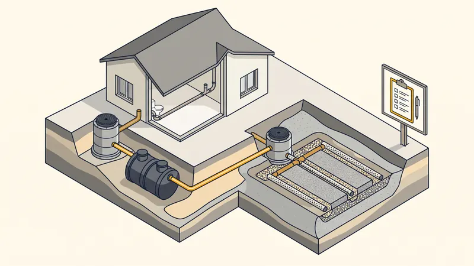

Normes Assainissement 2026 : Réglementation Complète & Obligations
La réglementation de l'assainissement en France est un domaine complexe, encadré par de nombreux textes de loi, normes techniques et contrôles. Que vous construisiez une maison neuve, rénoviez un système existant ou vendiez un bien immobilier, vous devez connaître vos obligations. STP Terrassement, expert en VRD et assainissement à Aix-en-Provence et en PACA, vous présente le cadre réglementaire complet en 2026.

Les textes fondateurs de l'assainissement
La loi sur l'eau (1992, modifiée en 2006)
La loi sur l'eau et les milieux aquatiques (LEMA) du 30 décembre 2006 constitue le socle réglementaire de l'assainissement en France. Elle impose aux communes de définir un zonage d'assainissement distinguant les zones d'assainissement collectif et non collectif, et de mettre en place un contrôle des installations individuelles.
Le Code de la santé publique
Les articles L.1331-1 à L.1331-16 du Code de la santé publique fixent les obligations de raccordement au réseau public d'assainissement. Tout propriétaire d'un immeuble situé en zone d'assainissement collectif doit se raccorder au tout-à-l'égout dans un délai de 2 ans après la mise en service du réseau.
L'arrêté du 7 septembre 2009 (modifié)
Cet arrêté fixe les prescriptions techniques applicables aux installations d'assainissement non collectif (ANC). Il définit les filières agréées, les distances d'implantation et les performances épuratoires minimales. Il a été modifié en 2012 puis en 2024 pour intégrer de nouvelles filières.

Le zonage d'assainissement
Chaque commune doit disposer d'un zonage d'assainissement qui classe chaque parcelle dans l'une des deux zones :
| Critère | Zone d'assainissement collectif | Zone d'assainissement non collectif |
|---|---|---|
| Obligation | Raccordement au tout-à-l'égout | Installation individuelle |
| Délai de raccordement | 2 ans après mise en service | - |
| Contrôle | Service assainissement communal | SPANC |
| Coût raccordement | 3 000 - 8 000 € | 5 000 - 15 000 € |
| Taxe annuelle | Redevance assainissement collectif | Redevance SPANC |
À Aix-en-Provence, le zonage d'assainissement est géré par la Métropole Aix-Marseille-Provence. Les zones urbanisées sont en assainissement collectif, tandis que les secteurs ruraux et les bastides isolées relèvent de l'assainissement non collectif.
Le SPANC : Service Public d'Assainissement Non Collectif
Le SPANC est le service chargé de contrôler les installations d'assainissement individuel. Ses missions sont définies par la loi sur l'eau :
Les contrôles du SPANC
| Type de contrôle | Quand | Coût moyen |
|---|---|---|
| Contrôle de conception | Avant travaux (permis de construire) | 80 - 200 € |
| Contrôle de réalisation | Pendant les travaux (avant remblai) | 100 - 250 € |
| Contrôle de bon fonctionnement | Périodique (tous les 4 à 10 ans) | 80 - 150 € |
| Diagnostic en cas de vente | Obligatoire avant vente immobilière | 100 - 250 € |
Les résultats du contrôle SPANC
- Conforme : l'installation respecte les normes en vigueur. Aucune action requise
- Non conforme sans danger : l'installation présente des défauts mineurs. Travaux de mise en conformité recommandés mais non obligatoires (sauf en cas de vente)
- Non conforme avec danger pour la santé ou l'environnement : travaux de mise en conformité obligatoires dans un délai de 4 ans (ou 1 an en cas de vente)
Les normes NF DTU applicables
NF DTU 64.1 : Assainissement non collectif
La norme NF DTU 64.1 (mise à jour en 2013) est la référence technique pour la mise en oeuvre des installations d'assainissement individuel. Elle couvre :
- Le dimensionnement des fosses toutes eaux (minimum 3 000 litres pour une habitation jusqu'à 5 pièces principales)
- Les règles d'implantation : 5 m minimum des habitations, 3 m des limites de propriété, 35 m des captages d'eau
- Les profondeurs et pentes des canalisations (pente minimale de 2 %)
- Les dispositifs de ventilation (extracteur statique ou éolien)
- Les conditions d'épandage (surface, profondeur, espacement des tranchées)
NF EN 12566 : Petites installations de traitement des eaux usées
Cette norme européenne définit les exigences pour les dispositifs de traitement des eaux usées domestiques d'une capacité maximale de 50 EH (Équivalent-Habitant). Elle s'applique aux micro-stations d'épuration, aux filtres compacts et aux fosses toutes eaux.
Les filières d'assainissement non collectif agréées
| Filière | Surface nécessaire | Prix moyen (HT) | Adapté en PACA |
|---|---|---|---|
| Fosse + épandage en tranchées | 100 - 200 m² | 5 000 - 8 000 € | Oui (si terrain adapté) |
| Fosse + filtre à sable vertical | 25 - 50 m² | 6 000 - 10 000 € | Oui |
| Fosse + tertre d'infiltration | 50 - 100 m² | 7 000 - 12 000 € | Oui (nappe haute) |
| Micro-station d'épuration | 5 - 10 m² | 7 000 - 15 000 € | Oui (terrain réduit) |
| Filtre compact (coco, zéolithe) | 10 - 20 m² | 8 000 - 13 000 € | Oui |
| Filtre planté de roseaux | 20 - 40 m² (2 m²/EH) | 6 000 - 11 000 € | Oui (si eau disponible) |
Assainissement collectif : le raccordement au tout-à-l'égout
Obligations du propriétaire
- Raccordement obligatoire : dans un délai de 2 ans après la mise en service du réseau public d'assainissement
- Conformité du branchement : séparation des eaux usées (EU) et des eaux pluviales (EP) en réseau séparatif
- Entretien : le propriétaire est responsable de l'entretien de la canalisation entre sa maison et le regard de branchement en limite de propriété
- Pénalités : en cas de non-raccordement, le propriétaire peut être astreint à payer une redevance majorée (jusqu'à 100 % de la redevance normale)
Coûts du raccordement au tout-à-l'égout
| Poste | Prix moyen (TTC) |
|---|---|
| Participation pour raccordement (PFAC/PRAC) | 500 - 5 000 € |
| Travaux de branchement (partie publique) | 800 - 3 000 € |
| Tranchée partie privée (terrassement) | 15 - 35 €/ml |
| Canalisation PVC diamètre 100-160 mm | 5 - 15 €/ml |
| Regards de visite | 150 - 400 € pièce |
| Suppression ancienne fosse | 500 - 1 500 € |
Consultez notre guide détaillé sur le prix du raccordement tout-à-l'égout pour plus d'informations.
Spécificités de l'assainissement en PACA
La région Provence-Alpes-Côte d'Azur présente des particularités qui impactent l'assainissement :
- Sols calcaires peu perméables : les sols rocheux autour d'Aix-en-Provence rendent l'épandage classique difficile. Les micro-stations ou filtres compacts sont souvent privilégiés
- Épisodes méditerranéens : les pluies intenses (épisodes cévenols) peuvent surcharger les réseaux d'assainissement et les dispositifs individuels. Le dimensionnement doit en tenir compte
- Zones de protection des captages : de nombreux périmètres de protection des sources et captages d'eau potable imposent des normes renforcées d'assainissement
- Sécheresse estivale : les micro-stations et filtres plantés de roseaux peuvent être impactés par le manque d'eau en été. Le choix de la filière doit tenir compte de l'occupation (résidence principale vs secondaire)
- Zones Natura 2000 : la proximité de zones naturelles protégées (Sainte-Victoire, Calanques, Luberon) impose des exigences épuratoires renforcées
Travaux d'Assainissement en PACA
STP Terrassement réalise vos travaux de terrassement pour l'assainissement à Aix-en-Provence et en PACA : tranchées, pose de fosses, raccordement tout-à-l'égout. Devis gratuit sous 24h.
Demandez votre devis gratuitObligations en cas de vente immobilière
Depuis le 1er janvier 2011, le diagnostic assainissement est obligatoire pour toute vente d'un bien en assainissement non collectif :
- Diagnostic de moins de 3 ans : le vendeur doit fournir un rapport de contrôle SPANC de moins de 3 ans
- Installation conforme : aucune action requise, la vente peut se réaliser normalement
- Installation non conforme : l'acquéreur doit réaliser les travaux de mise en conformité dans un délai d'1 an après la signature de l'acte de vente
- Négociation du prix : la non-conformité peut servir de levier de négociation. Le coût de mise aux normes (5 000 à 15 000 euros) est souvent déduit du prix de vente
Les évolutions réglementaires en 2026
- Renforcement des contrôles SPANC : les collectivités sont encouragées à réduire la périodicité des contrôles (passage de 10 à 6-8 ans dans de nombreuses communes)
- Gestion des eaux pluviales : les communes imposent de plus en plus la gestion des eaux pluviales à la parcelle (infiltration, rétention) pour les constructions neuves
- Nouvelles filières agréées : de nouvelles filières compactes et écologiques reçoivent régulièrement l'agrément ministériel
- Réutilisation des eaux usées traitées : un cadre réglementaire se met en place pour permettre la réutilisation des eaux usées traitées pour l'arrosage des jardins, particulièrement pertinent en PACA face à la raréfaction de l'eau
- Aides financières : l'Agence de l'Eau Rhône-Méditerranée-Corse propose des subventions pour la réhabilitation des installations non conformes (jusqu'à 3 000 euros sous conditions de ressources)
FAQ : Normes assainissement 2026
Qu'est-ce que le SPANC ?
Le SPANC (Service Public d'Assainissement Non Collectif) contrôle les installations d'assainissement individuel. Il vérifie la conception, la réalisation et le fonctionnement des dispositifs. Son contrôle est obligatoire et payant.
Comment savoir si mon terrain est en zone collectif ou non collectif ?
Consultez le zonage d'assainissement de votre commune, disponible en mairie ou sur le site internet de la collectivité. Ce document classe chaque parcelle.
Quelles sont les obligations en cas de vente ?
Un diagnostic assainissement de moins de 3 ans est obligatoire. Si l'installation est non conforme, l'acquéreur a 1 an pour effectuer les travaux de mise en conformité.
Quel est le coût d'une mise aux normes ?
La mise aux normes coûte entre 5 000 et 15 000 euros selon la filière : 5 000 - 8 000 euros pour une fosse + épandage, 7 000 - 15 000 euros pour une micro-station. Le raccordement au tout-à-l'égout coûte 3 000 à 8 000 euros.
Quelles normes NF DTU s'appliquent ?
La norme principale est la NF DTU 64.1 pour l'assainissement non collectif, complétée par la norme NF EN 12566 pour les dispositifs de traitement. Elles définissent le dimensionnement, l'implantation et la ventilation des installations.